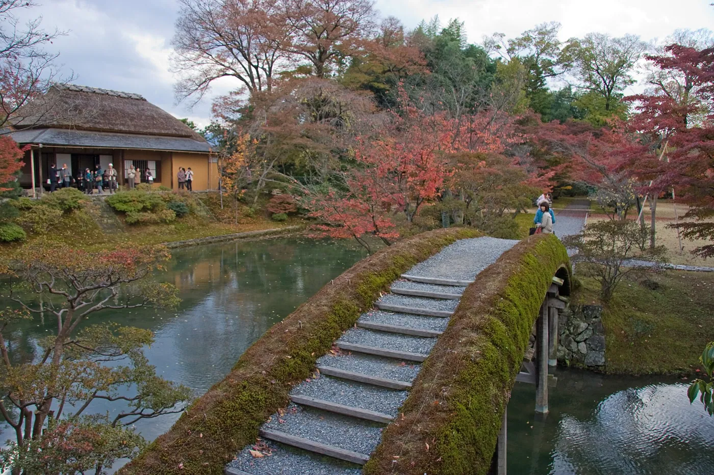
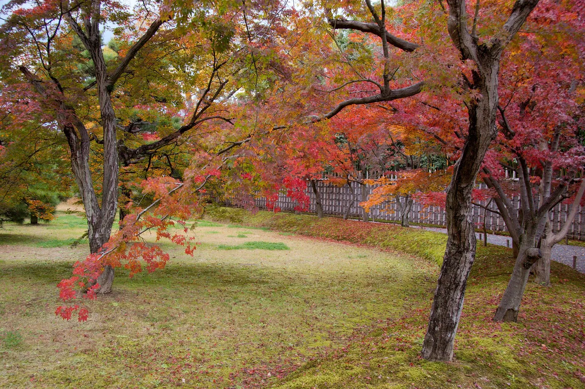
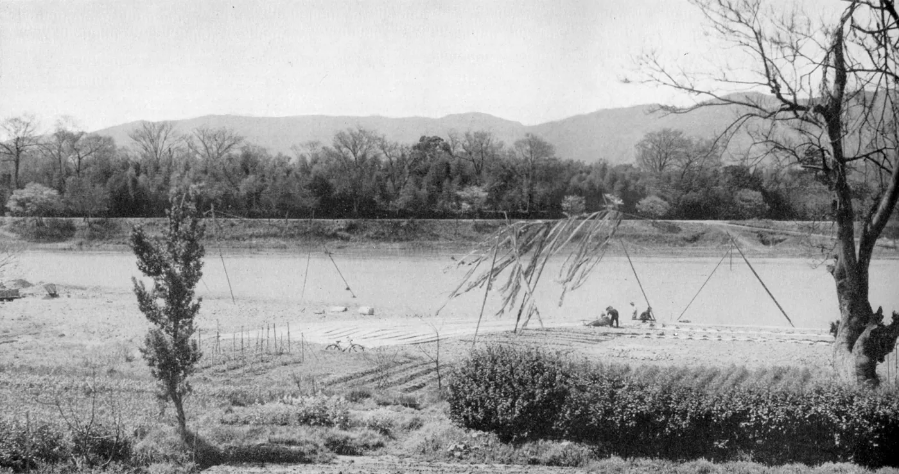
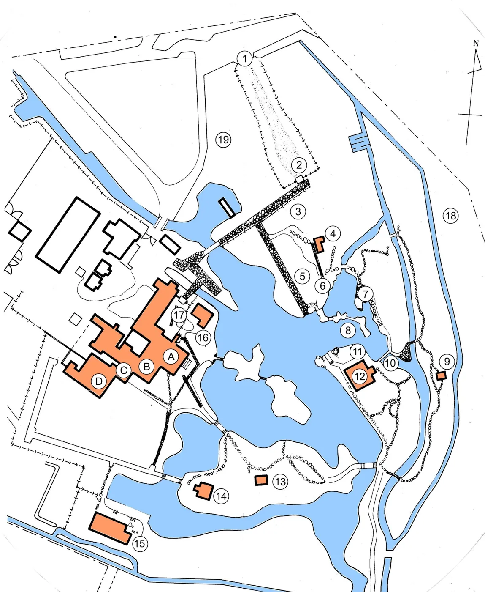

1/7 · Exterior · Katsura Rikyu ; Shōiken on the leftPhoto: KimonBerlin · CC BY-SA 2.0 · source
2/7 · Exterior · Katsura RikyuPhoto: KimonBerlin · CC BY-SA 2.0 · source 3/7 · Context · Katsura RikyuPhoto: KimonBerlin · CC BY-SA 2.0 · source
3/7 · Context · Katsura RikyuPhoto: KimonBerlin · CC BY-SA 2.0 · source
4/7 · Context · Katsura RikyuPhoto: KimonBerlin · CC BY-SA 2.0 · source5/7 · Detail · Photograph of wooden structure in pond outside Shōkintei in Katsura Imperial Villa, JapanPhoto: Carlquist, Sherwin John, 1930-2021 · CC BY 4.0 · source6/7 · InteriorPhoto: 佐藤辰三 · Public domain · source
7/7 · Drawing · Layout of Katsura VillaPhoto: Fraxinus2 · CC BY-SA 4.0 · source097/100 · House · Historic precedent
Katsura Imperial Villa
Prince Toshihito and Toshitada · Kyoto, Japan · 17th c.
Study it forTatami-module rooms and sliding screens that inspired Taut, Gropius and Tange.
- Architect
- Prince Toshihito and Toshitada
- Place
- Kyoto, Japan
- Year
- 17th c.
- Typology
- House
- Movement
- Historic precedent
- Region
- East Asia
See it on the wall


.jpg){kind=link}
.jpg){kind=link}
.jpg){kind=link}
.jpg){kind=link}
_-_DPLA_-_4dae02e5e8d1dd21841f166bee7d9aec.jpg){kind=link}